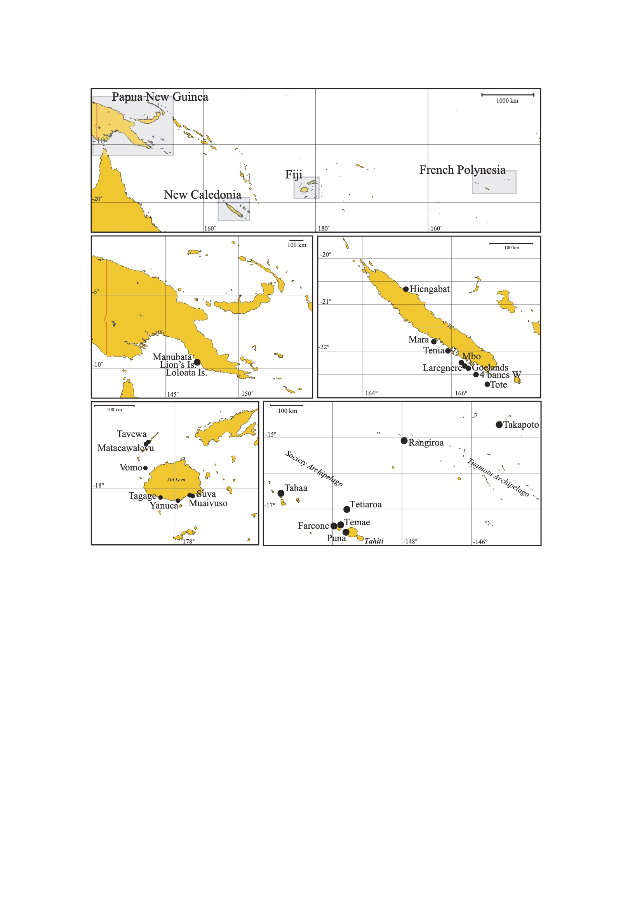
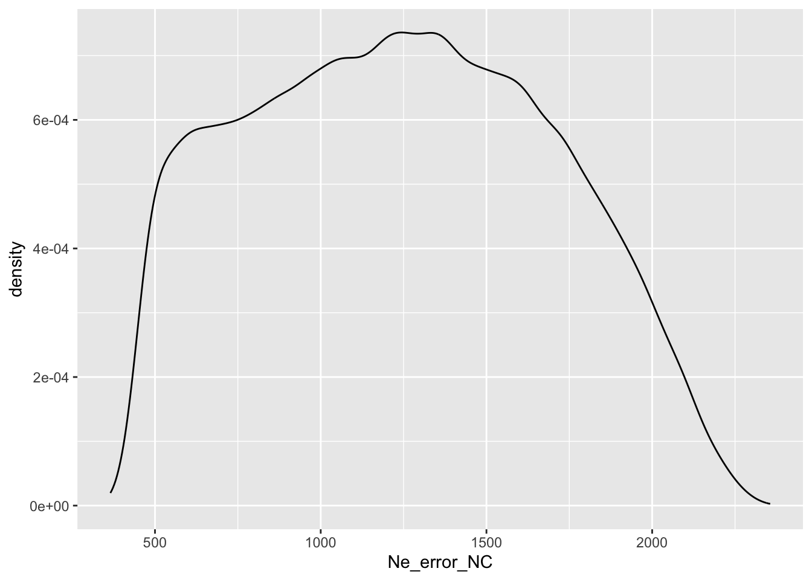
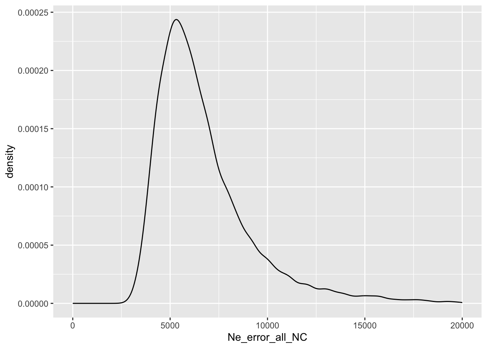

Cecile Fauvelot has kindly shared a giant (n=1358) microsatellite dataset for Dascyllus aruanus, the white tailed or humbug damsel. These have been sampled from Papua New Guinea, New Caledonia, Fiji and the Society Islands/Tuamotus.
White Tailed Damsel

Sample Sites
Read and convert data
Had to do a little conversion in bbedit to ready the Excel formatted data for input into R
Read in the data
Code
#read in the dataDaruanus.gen <-read.genepop("data/Daruanus_Fauvelot.gen", ncode = 3L)
Converting data from a Genepop .gen file to a genind object...
File description: Dascyllus aruanus all populations 1358 individuals
...done.
Code
# rename the populations to just the text valuesDaruanus.gen@pop <- Daruanus.gen@pop %>%str_extract("[A-Za-z]+") %>%as.factor()# read in the locality informationDaruanus.sites <-read_excel("data/Daruanus_sites.xlsx")Daruanus.gen@pop %>%tibble(pop =as.character(.)) %>%count(pop)
Test for HWE
Test for HWE. First look at the number of populations that have HWE departures for each locus. Then look at the distribution of p-values following Waples (2014). A flat distribution is fine, but enrichment for low p-values suggests that the locus is not globally at HWE.
Our results show that the LD method provides a good approximation of the NS as long as the scale of sampling is commensurate with the scale of local breeding.
Treating the whole dataset as one population yields \(N_e\) of -27423.9 (in other words too large) at pcrit of 0.02. But the problem is determining the size of the genetic neighborhood, because Fauvelot et al.’s samples were not as regularly spaced as D’Aloia’s.
Going to use the LD method as most recently discussed by Waples and Do (2010), and implemented in NeEstimator v2 (Do et al. 2014). I’m going to remove alleles following Waples and Do’s rule of thumb. Parameter settings are in "Daruanus/Ne_estimator/" Best to run this from the command line actually. I am having it calculate \(N_b\) (number of breeders) for monogamy, as the protogynous mating system of Dascyllus aruanus seems closer to monogamy than random mating. Also had to edit the table output of NeEstimator to make it legible to R because it had lots of spaces and empty cells 👎
Here’s the parameter file for LDNe
Code
/Applications/NeEstimator/Ne2-1M i:/Users/eric/github/IBD_Kernels/Daruanus/NeEstimator/info o:/Users/eric/github/IBD_Kernels/Daruanus/NeEstimator/optionINFO1* A number = sum of method(s)to run: LD(=1), Het(=2), Coan(=4), Temporal(=8)./Users/eric/github/IBD_Kernels/Daruanus/* Input DirectoryDaruanus_All_8locus.txt* Input file name2* 1 = FSTAT format, 2 = GENEPOP format/Users/eric/github/IBD_Kernels/Daruanus/NeEstimator/* Output DirectoryDaruanus_LDNe.txt* Output file name (put asterisk adjacent to the name to append)6* Number of critical values, added 1 if a run by rejecting only singleton alleles is included1 0.01 0.02 0.03 0.04 0.05 * Critical values, a special value '1' is for rejecting only singleton alleles1* 0: Random mating, 1: Monogamy (LD method)OPTION1 1 5 1 * First number = sum of method(s)to have extra output: LD(=1), Het(=2), Coan(=4), Temporal(=8)0* Maximum individuals/pop. If 0: no limit0* First entry n1 = 0: No Freq output. If n1 = -1: Freq. output up to population 50. Two entries n1, n2 with n1 <= n2: Freq output for populations from n1 to n2. Max. populations to have Freq output is set at 500* For Burrow output file (up to 50 populations can have output). See remark below1* Parameter CI: 1 for Yes, 0 for No1* Jackknife CI: 1 for Yes, 0 for No0* Up to population, or range of populations to run (if2 entries). If first entry = 0: no restriction0* All loci are accepted1* Enter 1: A file is created to document missing data if there are any in input file. Enter 0: no file created0* Line for chromosomes/loci option and file
I implemented a filtering step that follows Waples and Do (2010) :
For S > 100: choose Pcrit = 0.01 For S > 25: choose Pcrit = 0.02.
For S < 25: choose so that 1/(2S) < Pcrit < 1/S.
And I am only keeping estimates from samples with n >= 10.
Ne_estimates <-read_NeEstimator(file ="./NeEstimator/Daruanus_LDNe_xLD.txt")# filtering based on rule of thumb from Waples & DoNe_estimates_f <-WDFilter(Ne_estimates, 10) %>%mutate(Population =str_replace(Population,pattern ="\\d+\\:(\\w+)_[\\w-]+", replacement ="\\1" ))Ne_estimates_f
Interpreting LD Effective Size
These estimates are true Ne estimates because these samples were taken across the age structure of the population. So there won’t be any conversion from Nb to Ne.
Cecile says:
For Fiji and NC, multiple individuals at a coral colony were indeed sampled as we used clove oil around coral colonies covered by a plastic bag… so yes too, across age structure. I do not have the size of individuals sampled
Our empirical results provide some qualified support for the hypothesis (Waples and Do 2010) that a sample that includes as many cohorts as there are in a generation should produce an estimate approximately equal to Ne….All estimates based on random samples of adults were smaller than true Ne …, but there was a tendency for the bias to be less when the number of cohorts included in the adult sample corresponded more closely to the generation length.
Dascyllus aruanus strikes me as one of those species where you’ll have as many cohorts as generations, although protogyny kind of messes with this. In any case, we can expect our estimates of Ne (and thus De) to be downwardly biased, and therefore our estimates of \(\sigma\) to be upwardly biased, by hopefully less than 10%?
New Caledonia
Traditional Isolation by Distance Method
Based on the OG (Rousset 1997) estimator from slope of the IBD regression.
#calculate great circle distancegcdists_NC <-as.dist(pointDistance(NCpops[,5:4], lonlat=T)/1000)attr(gcdists_NC, "Labels") <- NCpops$Abbrgcdists.mat_NC <-as.matrix(gcdists_NC)#write.csv(as.matrix(gen.fst), "Daruanus_linearizedFst.csv", row.names = F, quote=F)#write.csv(as.matrix(gcdists), "Daruanus_gcdists.csv", row.names = F, quote=F)#pull out a few other distances we'll needneighbordists_NC <- gcdists.mat_NC[row(gcdists.mat_NC) ==col(gcdists.mat_NC) +1]distfromP1_NC <- gcdists.mat_NC[,1]maxdist_NC <-max(gcdists.mat_NC)meandists_NC <-mean(neighbordists_NC)
Calculate linear model
First to get the slope \(m\) we need to make a simple linear model. I don’t think significance is really important here, but we can calculate that with a Mantel test.
meanFis_NC_100km <- Daruanus.NC.100km.stats$Fis %>%as_tibble() %>%summarize(across(everything(),mean, na.rm=TRUE)) %>%summarize(meanFis =rowMeans(.))#genind_to_genepop(Daruanus.NC.100km,output = "NC/Daruanus_NC_100km.txt")Ne_estimates_NC100km <-read_NeEstimator(file ="NeEstimator/Daruanus_LDNe_NC_100kmxLD.txt")Ne_estimates_NC100km <-WDFilter(Ne_estimates_NC100km, 10)#replace one very large estimate of Ne with 20,0000Ne_estimates_NC100km$Ne[1] <-20000Ne_hm_NC100km <-harm_mean(Ne_estimates_NC100km$Ne)Ne_hm_NC100km
# Divide by mean distance between sampling sites to get densityDe_NC <- Ne_hm_NC/meandists_NCDe_all_NC <- Ne_all_NC / maxdist_NC
Mean density is 32.6102505 individuals/km, or if we do the whole sample as a single population 41.9068643 individuals/km
MigraiNe Method
Running MigraiNe
I modified the genepop file by adding sampling coordinates as the name of the last individual in each population. These coordinates were distances in km along a the mostly linear SW coastline of New Caledonia, which runs a total of ~612km. It is ~418km to the first population at Mara, so I am adding that value to the coordinates in the file.
distfromP1_NC+418
Mara Ten MBO Lar Go QBW Tote
418.0000 454.7026 494.1474 507.2045 514.9837 527.4177 568.2117
GenepopFileName=../Daruanus_NC.txtDemographicModel=LinearIBD# I modified the genepop file by adding sampling coordinates as the name of the # last individual in each population. These coordinates were distances in km along # a the mostly linear SW coastline of New Caledonia, # which runs a total of ~612km. It is ~418km to the first population at Mara, # so I am adding that value to the coordinates in the file.PSONMax=612 0#Neighborhood size is based on mean distance between populations = 25.08#612/25.08 = 24.40 so I will use 25 binsGeoBinNbr=25GeoUnit=ind.km#alternate way of specifying the habitat, not used for now#habitatPars= 0.5 0.5 400 1 0#habitatPars=0 0 0 300 0#Mutation Model is K-allele = PIM, with k=2 for SNPs. GivenK is number of alleles# at each locusMutationModel=PIMGivenK=26,35,11,57,47,32,30,23,57,34,44samplingSpace=,,samplingScale=,,#Analysis - this will do 5 runs of 100 points and#overwrite those with 10 runs of 250 pointswriteSequence=Over,Over,Over,Over,Over,Append,10StatisticSequence=PACPointNumber=100,100,100,100,100,250Nrunsperpoint=30,30,30,30,30,50#Wide priors on Neu, Nem and gLowerBound=0.1,1,0Upperbound=1,2500,1oneDimCI=2Nmu, 2Nm, Nb, condS2CoreNbrForR=4#Plots= all1DProfiles1DProfiles=2Nmu, 2Nm, Nb, condS2, gextrascale=Nb=logscalegraphicFormat=pdf#writeAdHocFiles=T
GenepopFileName=../Daruanus_NC.txtDemographicModel=LinearIBD# I modified the genepop file by adding sampling coordinates as the name of the # last individual in each population. These coordinates were distances in km along # a the mostly linear SW coastline of New Caledonia, # which runs a total of ~612km. It is ~418km to the first population at Mara, # so I am adding that value to the coordinates in the file.PSONMin=0 0PSONMax=612 0#Neighborhood size is based on mean distance between populations = 25.08#612/25.08 = 24.40 so I will use 26 binsGeoBinNbr=26GeoUnit=ind.km#alternate way of specifying the habitat, not used for now#habitatPars= 0.5 0.5 400 1 0#habitatPars=0 0 0 300 0#Mutation Model is K-allele = PIM, with k=2 for SNPsMutationModel=PIMGivenK=26,35,11,57,47,32,30,23,57,34,44samplingSpace=,,samplingScale=,,#Analysis - this will do 5 runs of 100 points and#overwrite those with 10 runs of 250 pointswriteSequence=Over,Over,Over,Over,Over,Append,10StatisticSequence=PACPointNumber=100,100,100,100,100,250Nrunsperpoint=30,30,30,30,30,50#Wide priors on Neu, Nem and gLowerBound=0.1,1,0Upperbound=2,10000,1oneDimCI=2Nmu, 2Nm, Nb, condS2CoreNbrForR=4#Plots= all1DProfiles1DProfiles=2Nmu, 2Nm, Nb, condS2, gextrascale=Nb=logscalegraphicFormat=pdf#writeAdHocFiles=T
This finished in 250 minutes, and had very similar results to the first run
After removing 3 loci
GenepopFileName=../../Daruanus_NC.txtDemographicModel=LinearIBD# I modified the genepop file by adding sampling coordinates as the name of the # last individual in each population. These coordinates were distances in km along # a the mostly linear SW coastline of New Caledonia, # which runs a total of ~612km. It is ~418km to the first population at Mara, # so I am adding that value to the coordinates in the file.PSONMin=0 0PSONMax=612 0#Neighborhood size is based on mean distance between populations = 25.08#612/25.08 = 24.40 so I will use 25 binsGeoBinNbr=25GeoUnit=ind.km#alternate way of specifying the habitat, not used for now#habitatPars= 0.5 0.5 400 1 0#habitatPars=0 0 0 300 0#Mutation Model is K-allele = PIM, with k=2 for SNPsMutationModel=PIMGivenK=26,11,57,32,30,23,57,44samplingSpace=,,samplingScale=,,#Analysis - this will do 5 runs of 100 points and#overwrite those with 10 runs of 250 pointswriteSequence=Over,Over,Over,Over,Over,Append,10StatisticSequence=PACPointNumber=100,100,100,100,100,250Nrunsperpoint=30,30,30,30,30,50#Wide priors on Neu, Nem and gLowerBound=0.1,1,0Upperbound=2,10000,1oneDimCI=2Nmu, 2Nm, Nb, condS2CoreNbrForR=4Plots=all1DProfiles#1DProfiles=2Nmu, 2Nm, Nb, condS2, gextrascale=Nb=logscalegraphicFormat=pdf#writeAdHocFiles=T
And, lo, I forgot to use the condS2 parameterization that is recommended for weak IBD signals by Leblois and Rousset (2020)!
GenepopFileName=../../Daruanus_NC.txtDemographicModel=LinearIBD# I modified the genepop file by adding sampling coordinates as the name of the # last individual in each population. These coordinates were distances in km along # a the mostly linear SW coastline of New Caledonia, # which runs a total of ~612km. It is ~418km to the first population at Mara, # so I am adding that value to the coordinates in the file.PSONMin=0 0PSONMax=612 0#Neighborhood size is based on mean distance between populations = 25.08#612/25.08 = 24.40 so I will use 25 binsGeoBinNbr=25GeoUnit=ind.km#alternate way of specifying the habitat, not used for now#habitatPars= 0.5 0.5 400 1 0#habitatPars=0 0 0 300 0#Mutation Model is K-allele = PIM, with k=2 for SNPsMutationModel=PIMGivenK=26,11,57,32,30,23,57,44#sampling - this performs uniform sampling of ln(sigma^2), which is the quantity we are interested insamplingSpace=,,condS2samplingScale=,,logscale#Analysis - this will do 5 runs of 100 points and#overwrite those with 10 runs of 250 pointswriteSequence=Over,Over,Over,Over,Over,Append,10StatisticSequence=PACPointNumber=100,100,100,100,100,250Nrunsperpoint=30,30,30,30,30,50#Wide priors on Neu, Nem and gLowerBound=0.1,1,1Upperbound=2,10000,100000oneDimCI=2Nmu, 2Nm, Nb, condS2CoreNbrForR=4Plots=all1DProfiles#1DProfiles=2Nmu, 2Nm, Nb, condS2, gextrascale=Nb=logscalegraphicFormat=pdf#writeAdHocFiles=T
Finishing in 171.6 minutes
Brought in the priors a little. Didn’t change the results much.
GenepopFileName=../../Daruanus_NC.txtDemographicModel=LinearIBD# I modified the genepop file by adding sampling coordinates as the name of the # last individual in each population. These coordinates were distances in km along # a the mostly linear SW coastline of New Caledonia, # which runs a total of ~612km. It is ~418km to the first population at Mara, # so I am adding that value to the coordinates in the file.PSONMin=0 0PSONMax=612 0#Neighborhood size is based on mean distance between populations = 25.08#612/25.08 = 24.40 so I will use 26 binsGeoBinNbr=26GeoUnit=ind.km#alternate way of specifying the habitat, not used for now#habitatPars= 0.5 0.5 400 1 0#habitatPars=0 0 0 300 0#Mutation Model is K-allele = PIM, with k=2 for SNPsMutationModel=PIMGivenK=26,11,57,32,30,23,57,44#sampling - this performs uniform sampling of ln(sigma^2)samplingSpace=,,condS2samplingScale=,,logscale#Analysis - this will do 5 runs of 100 points and#overwrite those with 10 runs of 250 pointswriteSequence=Over,Over,Over,Over,Over,Append,10StatisticSequence=PACPointNumber=100,100,100,100,100,250Nrunsperpoint=30,30,30,30,30,50#Wide priors on Neu, Nem and conds2LowerBound=0.1,1,1Upperbound=2,6000,10000oneDimCI=2Nmu, 2Nm, Nb, condS2, g#oneDimCI= AllCoreNbrForR=4Plots=all1DProfiles#1DProfiles=2Nmu, 2Nm, Nb, condS2, gextrascale=Nb=logscalegraphicFormat=pdfwriteAdHocFiles=T
Finished in 187.55 minutes.
Create Dispersal Kernels
Sigma estimates
So we have two routes to estimate \(\sigma\) here.
The \(\sigma\) we get from Neighborhood Size \(\sigma\) is 227. We get a much lower estimate from \(\sigma^2\), with \(\sigma\) = 1750
Confidence Intervals
Propagating error sorta following Pinsky et al. table S2
Error in Effective Size
Following Pinsky, Montes, and Palumbi (2010) I am going to bootstrap across the confidence intervals for each Nb estimate. Unfortunately, the new jackknife method of Jones, Ovenden, and Wang (2016) often results in infinite upper bounds with marine data (but then, so does the parametric method). I’m also going to use a uniform distribution for the error because approximating the error structure with ChiSq or Normal distributions is not a simple task and I’m just trying to get a sketch of the error to compare with MigraiNe anyway. I’m going to set “Infinite†values in the upper CI to 20,000 since I rarely see upper bounds that high.
Ne_estimates_NC$JackknifeHigh[which(is.na(Ne_estimates_NC$JackknifeHigh))] <-20000Ne_estimates_NC$JackknifeHigh <-as.numeric(Ne_estimates_NC$JackknifeHigh)Ne_estimates_NC$JackknifeLow <-as.numeric(Ne_estimates_NC$JackknifeLow)# couldn't get purrr:map to do this, so resorted to mapply to set upper and lower boundsNe_error_NC <-NULLfor(n in1:100000){ hm <-harm_mean(mapply(runif, n=1, min=Ne_estimates_NC$JackknifeLow,max=Ne_estimates_NC$JackknifeHigh)) Ne_error_NC <-c(Ne_error_NC,hm)}names(Ne_error_NC)<-NULL#write.csv(Ne_error_NC, "NC/Ne_error_NC.csv",quote=F,row.names = F)ggplot(data =tibble(Ne_error_NC), aes(x=Ne_error_NC)) +geom_density()

Naaykens and D’Aloia (2022) showed that using the whole sample to estimate density gives pretty similar results to the harmonic mean method, so I’m also going to try that.
# this shows that we can get approximately what NeEstimator gives us... not sure why its not exact... must be missing some correctionrCI_NC <- df_NC*r2_NC / (qchisq(c(0.025,0.975), df = df_NC))WaplesMonoNe(rCI_NC - er2_NC)
[1] 3729.688 16288.111
Code
#and now to get and plot the error distributionNe_error_all_NC <-WaplesMonoNe(((df_NC*r2_NC)/(rchisq(10000, df = df_NC))) - er2_NC)ggplot(data =tibble(Ne_error_all_NC), aes(x=Ne_error_all_NC)) +geom_density() +xlim(0,20000)

Error in Effective Density
One issue with this analysis is that, while Neel et al. (2013) make a good case that we are estimating the Ne of the local neighborhood, we don’t actually know what the size of the neighborhood is. Indeed, that’s actually what we are trying to estimate. (Pinsky, Montes, and Palumbi 2010) used neighborhoods that were 1/2 the distance to the next neighborhood on either side of the sampling site, while (Pinsky et al. 2017) didn’t even attempt this and just used the Ne of the whole sampled population, and divided by the length of the whole sampled area.
This is another area of uncertainty, so we should model the uncertainty in neighborhood length. We know its between 10 and 40 km based on the Ne vs. Sampling Window analysis above…
Using a uniform distribution is out because there is clearly a peaked distribution in the Migraine output. So I am using a quick fit to a truncated lognormal distribution.
fst.Fiji <-genet.dist(Daruanus.Fiji.hfst, method ="WC84")# mean Fis valuesstats.Fiji$Fis %>%as_tibble() %>%summarize(across(everything(),mean, na.rm=TRUE))
Code
# linearizefst.Fiji <- fst.Fiji/(1-fst.Fiji)
Geographic Distances
Also, given the circular nature of Viti Levu, the Euclidean distances measured with pointDistance() are going to be short. So I measured distances between each neighboring locality along the reef in Google Earth, as given in fijidistances
This code creates a kml file for import into Google Earth.
I used these points to measure distances in Google Earth. The total sampled length from Ovalu in the east to the Yasawas in the northwest was a total of ~414km.
Code
#calculate great circle distancegcdists_Fiji <-as.dist(pointDistance(fijipops.sp, lonlat=T)/1000)attr(gcdists_Fiji, "Labels") <- fijipops$Abbrgcdists.mat_Fiji <-as.matrix(gcdists_Fiji)#write.csv(as.matrix(gen.fst_Fiji), "Daruanus_linearizedFst.csv", row.names = F, quote=F)#write.csv(as.matrix(gcdists_Fiji), "Daruanus_gcdists.csv", row.names = F, quote=F)#pull out a few other distances we'll needneighbordists_Fiji <- gcdists.mat_Fiji[row(gcdists.mat_Fiji) ==col(gcdists.mat_Fiji) +1]#distfromP1 <- gcdists.mat[,1]#meandists <- mean(neighbordists)fijidistances <-c((106.03-98.16), (155.22-106.03), (188.58-155.22), (273.50-188.58), (370-273.50), (378.13-370.0))meandists_Fiji <-mean(fijidistances)maxdist_Fiji <-378.13-98.16fijidistances
[1] 7.87 49.19 33.36 84.92 96.50 8.13
This gives us a mean sampling distance of 46.6616667
\(\sigma\) estimated from this slope is 63.67 km if I use the harmonic mean Ne for density. I can’t use the Ne from the whole population because it is infinite.
GenepopFileName=../Daruanus_Fiji.txtDemographicModel=LinearIBD#I modified the genepop file by adding sampling coordinates as the name of the #last individual in each population. These coordinates were distances in km #along the Viti Levu reef and coastline from Ovalu in the east to the Yasawas #in the northwest: a total of ~414km. I measured all distances in Google EarthPSONMax=414 0#Neighborhood size is based on mean distance between populations = 46.66#414/46.66 = 8.87 so I will use 10 binsGeoBinNbr=10GeoUnit=ind.km#alternate way of specifying the habitat, not used for now#habitatPars= 0.5 0.5 400 1 0#habitatPars=0 0 0 300 0#Mutation Model is K-allele = PIM, with k=2 for SNPs. GivenK is number of alleles# at each locus (Daruanus.Fiji@loc.n.all)MutationModel=PIMGivenK=22,27,8,46,47,30,24,20,52,31,38samplingSpace=,,samplingScale=,,#Analysis - this will do 5 runs of 100 points and#overwrite those with 10 runs of 250 pointswriteSequence=Over,Over,Over,Over,Over,Append,10StatisticSequence=PACPointNumber=100,100,100,100,100,250Nrunsperpoint=30,30,30,30,30,50#Wide priors on Neu, Nem and gLowerBound=0.1,1,0Upperbound=1,2500,1oneDimCI=2Nmu, 2Nm, Nb, condS2CoreNbrForR=4#Plots= all1DProfiles1DProfiles=2Nmu, 2Nm, Nb, condS2, gextrascale=Nb=logscalegraphicFormat=pdf#writeAdHocFiles=T
This run completed in 147 minutes
A second run where I widen the prior on theta and Nm.
GenepopFileName=../Daruanus_Fiji.txtDemographicModel=LinearIBD#I modified the genepop file by adding sampling coordinates as the name of the #last individual in each population. These coordinates were distances in km #along the Viti Levu reef and coastline from Ovalu in the east to the Yasawas #in the northwest: a total of ~414km. I measured all distances in Google EarthPSONMax=414 0#Neighborhood size is based on mean distance between populations = 46.66#414/46.66 = 8.87 so I will use 10 binsGeoBinNbr=10GeoUnit=ind.km#alternate way of specifying the habitat, not used for now#habitatPars= 0.5 0.5 400 1 0#habitatPars=0 0 0 300 0#Mutation Model is K-allele = PIM, with k=2 for SNPs. GivenK is number of alleles# at each locus (Daruanus.Fiji@loc.n.all)MutationModel=PIMGivenK=22,27,8,46,47,30,24,20,52,31,38samplingSpace=,,samplingScale=,,#Analysis - this will do 5 runs of 100 points and#overwrite those with 10 runs of 250 pointswriteSequence=Over,Over,Over,Over,Over,Append,10StatisticSequence=PACPointNumber=100,100,100,100,100,250Nrunsperpoint=30,30,30,30,30,50#Wide priors on Neu, Nem and gLowerBound=0.1,1,0Upperbound=1,2500,1oneDimCI=2Nmu, 2Nm, Nb, condS2CoreNbrForR=4#Plots= all1DProfiles1DProfiles=2Nmu, 2Nm, Nb, condS2, gextrascale=Nb=logscalegraphicFormat=pdf#writeAdHocFiles=T
This result finished in the same amount of time and with very similar results to the first!
Removing 3 loci and using the condS2 search parameterization
GenepopFileName=../../Daruanus_Fiji.txtDemographicModel=LinearIBD#I modified the genepop file by adding sampling coordinates as the name of the #last individual in each population. These coordinates were distances in km #along the Viti Levu reef and coastline from Ovalu in the east to the Yasawas #in the northwest: a total of ~414km. I measured all distances in Google EarthPSONMax=414 0#Neighborhood size is based on mean distance between populations = 46.66#414/46.66 = 8.87 so I will use 10 binsGeoBinNbr=10GeoUnit=ind.km#alternate way of specifying the habitat, not used for now#habitatPars= 0.5 0.5 400 1 0#habitatPars=0 0 0 300 0#Mutation Model is K-allele = PIM, with k=2 for SNPs. GivenK is number of alleles# at each locus (Daruanus.Fiji@loc.n.all)MutationModel=PIMGivenK=22,8,46,30,24,20,52,38samplingSpace=,,condS2samplingScale=,,logscale#Analysis - this will do 5 runs of 100 points and#overwrite those with 10 runs of 250 pointswriteSequence=Over,Over,Over,Over,Over,Append,10StatisticSequence=PACPointNumber=100,100,100,100,100,250Nrunsperpoint=30,30,30,30,30,50#Wide priors on Neu, Nem and gLowerBound=0.1,1,1Upperbound=2,10000,100000oneDimCI=2Nmu, 2Nm, Nb, condS2CoreNbrForR=4#Plots= all1DProfiles1DProfiles=2Nmu, 2Nm, Nb, condS2, gextrascale=Nb=logscalegraphicFormat=pdfwriteAdHocFiles=T
Using a uniform distribution is out because there is clearly a peaked distribution in the Migraine output. So I am using a quick fit to a lognormal distribution
Now to follow what Malin did, and create a principal components axis, and measure distance along it.
# because we only care about the x axis, we need to reorder,so that Tetiaroa comes after Puna and before TemaeFPpops <- FPpops[c(1,4,2,3,5),]FPpops.sp <-SpatialPointsDataFrame(FPpops[,c(5,4)], data = FPpops, proj4string =CRS("+proj=longlat +datum=WGS84"))FPpops.utm <-spTransform(FPpops.sp, CRS("+proj=utm +zone=56 +datum=WGS84"))#as.dist(pointDistance(localities.utm,latlon=F)/1000)#principal components without scaling or centering, we just want the rotationpc_FP <-prcomp(FPpops.utm@coords, retx=T, scale=F,center=F)plot(pc_FP$x)
pcdists.mat_FP <-as.matrix(pcdists_FP)#pull out a few other distances we'll needneighbordists_FP <- pcdists.mat_FP[row(pcdists.mat_FP) ==col(pcdists.mat_FP) +1]distfromP1_FP <- pcdists.mat_FP[,1]maxdist_FP <-max(pcdists.mat_FP)meandists_FP <-mean(neighbordists_FP)
Mean sampling distance is 86.1473678 km. But note that Tetiaroa occurs only a couple of kilometers from the Moorea population because they are being forced onto the rotated X axis.
Calculate linear model
First to get the slope \(m\) we need to make a simple linear model. I don’t think significance is really important here, but we can calculate that with a Mantel test.
So effective density is 11.81 individuals per km, and \(\sigma\) is 64.23 km if we calculate density based on harmonic mean of Ne, or rsignif(sigma_fromSlope_all_FP,4)` km if we calculate it across the whole sample.
I modified the genepop file by adding sampling coordinates as the name of the last individual in each population. There is no coastline for these samples, which each come from different islands. I just measured from Tahiti to Maupiti It’s 65 km from the tip of Tahiti Iti to Puna, so I added that to each coordinate
distfromP1_FP+65
Puna Tetia Tem Mo Tahaa
65.00000 73.17410 90.15654 116.74566 393.24127
GenepopFileName=../Daruanus_FP.txtDemographicModel=LinearIBD#I modified the genepop file by adding sampling coordinates as the name of the #last individual in each population. There is no coastline for these samples,# which each come from different islands. I just measured from Tahiti to Maupiti# It's 65 km from the tip of Tahiti Iti to Puna, so I added that to # each coordinate.PSONMax=355 0#Neighborhood size is based on mean distance between populations = 75.78#355/75.78 = 4.684 so I will use 6 binsGeoBinNbr=6GeoUnit=ind.km#alternate way of specifying the habitat, not used for now#habitatPars= 0.5 0.5 400 1 0#habitatPars=0 0 0 300 0#Mutation Model is K-allele = PIM, with k=2 for SNPs. GivenK is number of alleles# at each locus (Daruanus.FP@loc.n.all)MutationModel=PIMGivenK=21,24,8,37,43,26,19,16,43,31,40samplingSpace=,,samplingScale=,,#Analysis - this will do 5 runs of 100 points and#overwrite those with 10 runs of 250 pointswriteSequence=Over,Over,Over,Over,Over,Append,10StatisticSequence=PACPointNumber=100,100,100,100,100,250Nrunsperpoint=30,30,30,30,30,50#Wide priors on Neu, Nem and gLowerBound=0.1,1,0Upperbound=2,10000,1oneDimCI=2Nmu, 2Nm, Nb, condS2CoreNbrForR=4#Plots= all1DProfiles1DProfiles=2Nmu, 2Nm, Nb, condS2, gextrascale=Nb=logscalegraphicFormat=pdf#writeAdHocFiles=T
The first run finished with an error, but a second identical run completed in 50.8666667 minutes. Both runs had very similar results.
Widened the prior on theta because the first two runs were over
GenepopFileName=../Daruanus_FP.txtDemographicModel=LinearIBD#I modified the genepop file by adding sampling coordinates as the name of the #last individual in each population. There is no coastline for these samples,# which each come from different islands. I just measured from Tahiti to Maupiti# It's 65 km from the tip of Tahiti Iti to Puna, so I added that to # each coordinate.PSONMax=355 0#Neighborhood size is based on mean distance between populations = 75.78#355/75.78 = 4.684 so I will use 6 binsGeoBinNbr=6GeoUnit=ind.km#alternate way of specifying the habitat, not used for now#habitatPars= 0.5 0.5 400 1 0#habitatPars=0 0 0 300 0#Mutation Model is K-allele = PIM, with k=2 for SNPs. GivenK is number of alleles# at each locus (Daruanus.FP@loc.n.all)MutationModel=PIMGivenK=21,24,8,37,43,26,19,16,43,31,40samplingSpace=,,samplingScale=,,#Analysis - this will do 5 runs of 100 points and#overwrite those with 10 runs of 250 pointswriteSequence=Over,Over,Over,Over,Over,Append,10StatisticSequence=PACPointNumber=100,100,100,100,100,250Nrunsperpoint=30,30,30,30,30,50#Wide priors on Neu, Nem and gLowerBound=0.1,1,0Upperbound=4,10000,1oneDimCI=2Nmu, 2Nm, Nb, condS2CoreNbrForR=4#Plots= all1DProfiles1DProfiles=2Nmu, 2Nm, Nb, condS2, gextrascale=Nb=logscalegraphicFormat=pdf#writeAdHocFiles=T
Removed 3 loci, used condS2 parameterization
GenepopFileName=../../Daruanus_FP.txtDemographicModel=LinearIBD#I modified the genepop file by adding sampling coordinates as the name of the #last individual in each population. There is no coastline for these samples,# which each come from different islands. I just measured from Tahiti to Maupiti# It's 65 km from the tip of Tahiti Iti to Puna, so I added that to # each coordinate.PSONMax=355 0#Neighborhood size is based on mean distance between populations = 75.78#355/75.78 = 4.684 so I will use 6 binsGeoBinNbr=6GeoUnit=ind.km#alternate way of specifying the habitat, not used for now#habitatPars= 0.5 0.5 400 1 0#habitatPars=0 0 0 300 0#Mutation Model is K-allele = PIM, with k=2 for SNPs. GivenK is number of alleles# at each locus (Daruanus.FP@loc.n.all)MutationModel=PIMGivenK=21,8,37,26,19,16,43,40samplingSpace=,,condS2samplingScale=,,logscale#Analysis - this will do 5 runs of 100 points and#overwrite those with 10 runs of 250 pointswriteSequence=Over,Over,Over,Over,Over,Append,10StatisticSequence=PACPointNumber=100,100,100,100,100,250Nrunsperpoint=30,30,30,30,30,50#Wide priors on Neu, Nem and gLowerBound=0.1,1,1Upperbound=4,10000,100000oneDimCI=2Nmu, 2Nm, Nb, condS2, gCoreNbrForR=4Plots=allProfiles#1DProfiles=2Nmu, 2Nm, Nb, condS2, gextrascale=Nb=logscalegraphicFormat=pdfwriteAdHocFiles=T
The \(\sigma\) we get from \(F_{ST}\) ~ Distance is 64.2, and from Neighborhood Size \(\sigma\) is 88. We again get a lower estimate from \(\sigma^2\), with \(\sigma\) = 15
Confidence Intervals
Propagating error sorta following Pinsky et al. table S2
Following Pinsky, Montes, and Palumbi (2010) I am going to bootstrap across the confidence intervals for each Nb estimate. Unfortunately, the new jackknife method of Jones, Ovenden, and Wang (2016) often results in infinite upper bounds with marine data. I’m going to use the jackknife CIs. I’m also going to use a uniform distribution for the error because approximating the error structure with ChiSq or Normal distributions is not a simple task and I’m just trying to get a sketch of the error to compare with MigraiNe anyway. I’m going to set “Infinite†values in the upper CI to 20,000 since I rarely see upper bounds that high.
Naaykens and D’Aloia showed that using the whole sample to estimate density gives pretty similar results to the harmonic mean method, so I’m also going to try that.
# this shows that we can get approximately what NeEstimator gives us... #not sure why its not exact... must be missing some correctionrCI_FP <- df_NC*r2_FP / (qchisq(c(0.025,0.975), df = df_FP))WaplesMonoNe(rCI_NC - er2_NC)
[1] 3729.688 16288.111
Code
#and now to get and plot the error distributionNe_error_all_FP <-WaplesMonoNe(((df_FP*r2_FP)/(rchisq(100000, df = df_FP))) - er2_FP)ggplot(data =tibble(Ne_error_all_FP), aes(x=Ne_error_all_FP)) +geom_density() +xlim(0,30000)
Using a uniform distribution is out because there is clearly a peaked distribution in the Migraine output. So I am using a quick fit to a truncated lognormal distribution
NC <-tibble(Archipelago ="New Caledonia",Estimate =c("Mean sampling distance","Fst ~ Distance Slope","Ne Harmonic Mean","Ne as one population","Effective Density","Effective Density one pop","Theta","Nm","g","Neighborhood Size","Neighborhood Size Low CI","Neighborhood Size High CI","Bin Width","sigma from slope","sigma from slope; Ne as one pop","sigma from NS","sigma from NS; Ne as one pop","sigma from sigma2"),Values =c(meandists_NC, slope_NC, Ne_hm_NC, Ne_all_NC, De_NC, De_all_NC, Nmu_NC, Nm_NC, g_NC, NS_NC, NSCI_NC[1], NSCI_NC[2], lattice2geog_NC,NA,NA, sigma_fromNS_NC, sigma_fromNS_all_NC, sigma_fromsigma2_NC ))Fiji <-tibble(Archipelago ="Fiji",Estimate =c("Mean sampling distance","Fst ~ Distance Slope","Ne Harmonic Mean","Ne as one population","Effective Density","Effective Density one pop","Theta","Nm","g","Neighborhood Size","Neighborhood Size Low CI","Neighborhood Size High CI","Bin Width","sigma from slope","sigma from slope; Ne as one pop","sigma from NS","sigma from NS; Ne as one pop","sigma from sigma2"),Values =c(meandists_Fiji, slope_Fiji, Ne_hm_Fiji, Ne_all_Fiji, De_Fiji,NA, Nmu_Fiji, Nm_Fiji, g_Fiji, NS_Fiji, NSCI_Fiji[1], NSCI_Fiji[2], lattice2geog_Fiji, sigma_fromSlope_Fiji,NA, sigma_fromNS_Fiji,NA, sigma_fromsigma2_Fiji ))FP <-tibble(Archipelago ="Societies",Estimate =c("Mean sampling distance","Fst ~ Distance Slope","Ne Harmonic Mean","Ne as one population","Effective Density","Effective Density one pop","Theta","Nm","g","Neighborhood Size","Neighborhood Size Low CI","Neighborhood Size High CI","Bin Width","sigma from slope","sigma from slope; Ne as one pop","sigma from NS","sigma from NS; Ne as one pop","sigma from sigma2"),Values =c(meandists_FP, slope_FP, Ne_hm_FP, Ne_all_FP, De_FP, De_all_FP, Nmu_FP, Nm_FP, g_FP, NS_FP, NSCI_FP[1], NSCI_FP[2], lattice2geog_FP, sigma_fromSlope_FP, sigma_fromSlope_all_FP, sigma_fromNS_FP, sigma_fromNS_all_FP, sigma_fromsigma2_FP )) across.archipelagos <-bind_rows(NC,Fiji,FP)across.archipelagos.df <-dcast(across.archipelagos,Archipelago~Estimate)#write_csv(across.archipelagos.df,"Across_archipelago_statistics.csv")errors <-enframe(c(NC_NS = sigma_error_fromNS_NC,NC_NS_all = sigma_error_fromNS_all_NC,Fiji_NS = sigma_error_fromNS_Fiji,Fiji_Slope = sigma_error_fromSlope_Fiji,FP_NS = sigma_error_fromNS_FP, FP_NS_all = sigma_error_fromNS_all_FP,FP_Slope = sigma_error_fromSlope_FP,FP_Slope_all = sigma_error_fromSlope_all_FP),name ="Archipelago", value ="Sigma") %>%mutate(Archipelago =str_remove(Archipelago, pattern="\\d+$"))violins <-ggplot(errors, aes(x = Archipelago, y = Sigma)) +geom_violin() +coord_cartesian(ylim =c(5, 1000)) +#geom_point(data = across.archipelagos, # mapping = aes(x = "Archipelago", y = "Sigma")) +scale_y_log10()boxes <-ggplot(errors, aes(x = Archipelago, y = Sigma)) +geom_boxplot() +coord_cartesian(ylim =c(5, 1000)) +#geom_point(data = across.archipelagos, # mapping = aes(x = "Archipelago", y = "Sigma")) +scale_y_log10()
Make figures for the proposal
Code
errors.p <-enframe(c(`New Caledonia`= sigma_error_fromNS_NC,Fiji = sigma_error_fromSlope_Fiji,Societies = sigma_error_fromSlope_FP),name ="Archipelago", value ="Sigma") %>%mutate(Archipelago =str_remove(Archipelago, pattern="\\d+$"))#create a tibble with the point estimates of interestpoint_estimates <- across.archipelagos.df %>%select("Archipelago","sigma from slope") %>%mutate(`sigma from slope`=replace(`sigma from slope`,2, across.archipelagos.df$`sigma from NS`[2])) violins.p <- errors.p %>%remove_missing() %>%mutate(Archipelago =factor(Archipelago,levels =c("New Caledonia","Fiji","Societies"))) %>%ggplot() +geom_violin(mapping =aes(x = Archipelago, y = Sigma)) +geom_point(data = point_estimates, mapping =aes(x = Archipelago, y =`sigma from slope`), color ="grey", size =5) +ylim(0,1000) +coord_cartesian(ylim =c(1, 1000)) +scale_y_log10()#ggsave("Daruanus_archipelagos_violins.pdf",violins.p)kernelplot_archipelagos <-ggplot(data.frame(x=c(0,250)),aes(x)) +map(.x =sample(sigma_error_fromNS_NC,500), .f =function(sigma){stat_function(fun = dexp, args =list(rate =1/sigma),colour ="palevioletred",linetype=1,size=0.1,alpha =0.1) }) +map(.x =sample(sigma_error_fromSlope_Fiji,500), .f =function(sigma){stat_function(fun = dexp, args =list(rate =1/sigma),colour ="goldenrod", linetype=1,size=0.1,alpha =0.1) }) +map(.x =sample(sigma_error_fromSlope_FP,500), .f =function(sigma){stat_function(fun = dexp, args =list(rate =1/sigma),colour ="lightblue",linetype=1,size=0.1,alpha =0.1) }) +stat_function(fun=dexp,args=list(rate =1/sigma_fromNS_NC), linetype=1,aes(color="New Caledonia"), show.legend = T) +stat_function(fun=dexp,args=list(rate =1/sigma_fromSlope_Fiji), linetype=1,aes(color="Fiji"), show.legend = T) +stat_function(fun=dexp,args=list(rate =1/sigma_fromSlope_FP), linetype=1,aes(color="Societies"), show.legend = T) +xlab("Alongshore Distance (km)") +ylab("Dispersal probability density") +scale_color_manual("Archipelago",values =c(`New Caledonia`="red",Fiji ="orange",Societies="blue" )) +ylim(0,0.02)kernelplot_archipelagos
I want to check out what Treemix can do with this dataset, and see if it has any insight into directionality. The treemix manual says:
the entries for each population are the mean length, variance in length, and number of haplotypes at each microsatellite in each population, again comma-delimited.
Convert data
Here is code to convert genepop format to treemix format:
It turns out you can evaluate the likelihood of the Treemix model in the same way that is frequently done for structure using the Evanno, Regnaut, and Goudet (2005) method. Fitak (2021) developed the OptM package to do this, and a few other statistics as well
Run Treemix at a variety of m
Run 5 replicates of Treemix for migration edges of 1 through 10.
Code
for m in{1..10};dofor n in{1..5};do# Generate random seeds=$RANDOMtreemix-i ../Daruanus_treemix.txt.gz -o PNG.${n}.${m}-global-m${m}-seed${s}-microdonedone
OptM
So the OptM algorithm doesn’t work because the standard deviation across replicates is zero, because these are microsats, not SNPs. So I will borrow the read.treemix() function and do the analysis myself.
All populations the same size. Gene flow between all populations at the same rate
custom-migration={m m m m mm m m m mm m m m mm m m m mm m m m m}
custom-migration={*}
custom-migration={* D 0 0 00* D 0 00 0 * D 00 0 0 * D0 0 0 0 *}
custom-migration={* 0 0 0 0D* 0 0 00 D * 0 00 0 D * 00 0 0 D *}
custom-migration={* d 0 0 00* d 0 00 0 * d 00 0 0 * d0 0 0 0 *}
Based on the treemix result above. Migration from the Societies to New Caledonia
custom-migration={* 0 0 0 0d* 0 * 00 d * 0 00 0 d * 00 0 0 d *}
Run It
Copy it up to Nautilus, make 10 replicate folders.
scp-r ./migrate/Models2 naut:./Daruanus3/rep1for a in$(seq 2 10);docp-r rep1 rep$a;done
Bash Script
So we will do 10 replicates of 3 replicates. This will start at r1, and run all models for that before moving on. Pretty sure this will finish one whole model before moving on to the next one (since all threads are being used for different loci)
Code
### Bash Script#!for r in*/doecho starting $r at $(date)>> progress.txtcd$recho$rdatedate> progress.txtfor m in*/doecho starting $m at $(date)>> progress.txtcd$mdate> date.txtecho$mdatempirun--use-hwthread-cpus-np 120 ~/migrate-4.4.4/src/migrate-n-mpi parmfilesleep 1cd ..donecd ..done
Starting material for this one is from the Ptuberculosa_migrate.rmd
Code
harvest.model.likelihoods <-function(workingDir = workingDir,outfileName ="outfile.txt",multilocus = T){# this function harvests model marginal likelihoods for models calculated by# the program migrate-n (Beerli & Felsenstein 2001).# It takes as input a directory full of directories, # each of which contains output from a migrate model, and is named# after that model. #initialize a data frame to take the values modelMarglikes <-data.frame(model=character(),thermodynamic=numeric(),bezier.corrected=numeric(), harmonic=numeric()) # loop through directories in the working directory, each of which is name# after a different modelfor(i inlist.dirs(workingDir, full.names = F)[-1]){ #i<-"stepping.stone" modelDir<-file.path(workingDir,i)print(modelDir)#scan in the outfile, separating at each newline outfile<-scan(file=file.path(modelDir,outfileName),what="character",sep="\n") #find the line with the likelihoods on it and split on runs of spaces marglikeline <-str_which(outfile,"Scaling factor")-1 marglikeline <-strsplit(outfile[marglikeline],"\\s+", perl = T)[[1]][3:5]# if(length(marglikeline)==0){next} marglikes <-c(i,marglikeline) modelMarglikes <-rbind(modelMarglikes,marglikes, deparse.level =2) }names(modelMarglikes) <-c("model","thermodynamic","bezier.corrected","harmonic") modelMarglikes[2:4] <-sapply(modelMarglikes[2:4], as.numeric)return(modelMarglikes)}bfcalcs<-function(df,ml="bezier.corrected"){# This calculates log bayes factors on data frames output by# harvest.model.likelihoods(), following Johnson and Omland (2004)# You may choose the likelihood flavor with# ml = "bezier.corrected", "thermodynamic" or "harmonic"#df$thermodynamic <- as.numeric(df$thermodynamic)#df$bezier.corrected <- as.numeric(df$bezier.corrected)#df$harmonic <- as.numeric(df$harmonic) mlcol <- df[[ml]] bmvalue <- mlcol[which.max(mlcol)] lbf <-2*(mlcol-bmvalue) choice <-rank(-mlcol) modelprob <-exp(lbf/2)/sum(exp(lbf/2)) dfall <-cbind(df,lbf,choice,modelprob)return(dfall)} migrants.per.gen<-function(x){#a function for creating Nm vectors out of m and Theta vectors.#x<-x[[1]] m<-names(x)[which(grepl("M_",names(x)))] #names of m columns#theta<-names(x)[which(grepl("Theta_",names(x)))] #names of theta columnsfor(n in m){ t<-paste("Theta",strsplit(n,split="_")[[1]][3],sep="_") x[,paste("Nm",strsplit(n,split="_")[[1]][2],strsplit(n,split="_")[[1]][3],sep="_")]<- x[,which(names(x)==n)]*x[,which(names(x)==t)] #this hairy little statement makes a new column named "Nm_X_Y" and then fills it by multiplying the M_X_Y column by the Theta_Y column }return(x)}remove_prior <-function(densityd,prior,threshold =1e-10, quad_prec = F){# this function removes a prior from the # y values of a density distributions (density).# first it zeros values less than a threshold, then # removes the prior, then renormalizes so the density# sums to 1.# can optionally use the mpfr package for very small density values.require(Rmpfr) densityd[which(densityd < threshold)] <-0if(quad_prec){ densityd <-mpfr(densityd,precBits =128) } new <- (densityd/prior)/sum(densityd/prior) new <-as.numeric(new)return(new)}sum_over_loci <-function(df,parameter){#this function takes a data frame of probability densities for many loci# that have had the prior removed,# together with with a logged prior named "logPrior",# as well as the name of a parameter (e.g. "Theta_1")# and sums the densities over loci.# Rmpfr package allows quadruple precision for #calcs on very small numbers.require(Rmpfr)#add a teeny-tiny amount to all values to avoid zeros df2 <- df %>%mutate(across(starts_with(parameter), .fns=function(x) x +1e-11)) %>%#log all valuesmutate(across(starts_with(c(parameter)),.fns=log)) %>%# convert the df to rowwise so that rows can be summed# and then sum across the row, including the priorrowwise() %>%mutate(sum_param_prior =sum(c_across(starts_with(c(parameter,"logPrior"))))) %>%#convert back to a regular dfungroup()#need to convert to quadruple precision because #these will exponentiate to very small numbers. sum_param_prior_exp <-exp(mpfr(df2$sum_param_prior, precBits =128))# standardize by dividing by the sum of the column sum_param_prior_standardized <- sum_param_prior_exp/sum(sum_param_prior_exp)#drop the intermediate columns (no longer needed), change the standardized# output back to double precision so that it can be incorporated into the df# rename the summed column after the parameter df3 <- df2 %>%select(-c(sum_param_prior)) %>%mutate(summed_over_loci =as.numeric(sum_param_prior_standardized)) %>%rename_with(.fn =~paste(parameter), .cols = summed_over_loci)return(df3)}summarize_posterior <-function(posterior, parameter_type =c("Theta","M","Nm","D"), prior,n=16384, ...){# this function takes a Migrate-n posterior "bayesallfile" as a dataframe# as well as one of the parameter types, and the prior on that parameter# as a tibble of x and y values. # Currently only exponential priors supported# it will create densities for each parameter of the given type,# remove the prior from each, sum across loci, and re-add the prior (once) parameters <-names(posterior) %>%str_subset(parameter_type)# create a tibble with x values for a density plot# of the chosen number of points dens <- priorprint("calculating densities")# calculate densities for each parameter of a given type at each locus dens <- posterior %>%select(starts_with(c("StepsR","Locus",paste0(parameter_type,"_")))) %>%pivot_wider(names_from ="Locus", values_from =starts_with(paste0(parameter_type,"_")),names_sep ="-") %>%select(starts_with(paste0(parameter_type,"_"))) %>%map_dfc(function(x) density(x, n = n, from =0,bw ="nrd0")$y) %>%bind_cols(dens)# create, standardize, log and remove prior#check for NA values#df %>% #select_if(function(x) any(is.na(x))) %>% #summarise_each(funs(sum(is.na(.)))) -> extra_NAprint("removing prior") dens2 <- dens %>%#remove the prior, standardizemutate(across(starts_with(parameter_type), ~remove_prior(densityd = .x,prior = dens$prior,threshold =1e-10, ...) )) dens3 <- dens2for(p in parameters){print(p) dens3 <-sum_over_loci(df = dens3, parameter = p) }# trying to do the above loop with purrr:map_dfc#dens4 <- parameters %>% # map_dfc(.f = ~ sum_over_loci(df = dens2, parameter = .x))return(dens3)}posterior_stats <-function(df,parameter){require(spatstat.core) p <- df %>%select(all_of(c("x",parameter))) %>%as.list(bw =1)names(p) <-c("x", "y") p$bw <-1attr(p, "class") <-"density" qu <-quantile.density(p, c(0.025, 0.25, 0.5, 0.75, 0.975)) wmo <- p$x[which(p$y==max(p$y))] wme <-weighted.mean(p$x, p$y) wsd <-sqrt(weighted.var(p$x, p$y)) stats <-c(qu,mode = wmo, mean = wme, sd = wsd)return(stats)}
Model Marginal Likelihoods
Code
runDir <-"./migrate/output2"likelist <-list()for(r in1:10){ rep =paste0("rep",r)print(rep) likelist[[rep]] <-harvest.model.likelihoods(workingDir=file.path(runDir,rep))}# Model selection for each replicate...likelist %>%map(bfcalcs)
The final model marginal likelihood estimates based on the mean of 10 replicates. The best model is West to East divergence with migration as specified by Treemix (a single migration event from Societies to New Caledonia)!
Difference between West to East Treemix and the second-place East to West Treemix model is not significant, due to fairly large variability in marginal likelhoods. Need to consider this in the discussion.
Exact Permutation Test (complete enumeration)
data: GROUP 1 and GROUP 2
p-value = 0.1183
alternative hypothesis: true mean GROUP 1 - mean GROUP 2 is greater than 0
sample estimates:
mean GROUP 1 - mean GROUP 2
40019.9
Exact Permutation Test (complete enumeration)
data: GROUP 1 and GROUP 2
p-value = 0.09168
alternative hypothesis: true mean GROUP 1 - mean GROUP 2 is greater than 0
sample estimates:
mean GROUP 1 - mean GROUP 2
54014.3
Model Selection Figures
And a figure summarizing all this
Code
models <-c("2-way Stepping-Stone Equilibrium","E to W Divergence with Migration","E to W Divergence Only","E to W Treemix", "E to W Stepping-Stone Equilibrium","n-Island","Panmixia","W to E Divergence with Migration","W to E Divergence Only","W to E Treemix", "W to E Stepping-Stone Equilibrium")likesPlot <- likelist %>%bind_rows() %>%group_by(model) %>%ggplot(mapping =aes(x=model, y = bezier.corrected)) +geom_violin(draw_quantiles =0.5) +theme(axis.text.x =element_text(angle =90, vjust =0.5, hjust=1)) +scale_x_discrete(labels = models) +labs(x ="Metapopulation Model", y ="Bezier Corrected Marginal Likelihood") +theme(axis.text.x =element_text(angle =45, vjust =1))likesPlot
Do, C., R. S. Waples, D. Peel, G. M. Macbeth, B. J. Tillett, and J. R. Ovenden. 2014. “NeEstimator V2: Re-Implementation of Software for the Estimation of Contemporary Effective Population Size from Genetic Data.”Molecular Ecology Resources 14 (1): 209–14. https://doi.org/10.1111/1755-0998.12157.
Evanno, G., S. Regnaut, and J. Goudet. 2005. “Detecting the Number of Clusters of Individuals Using the Software STRUCTURE: A Simulation Study.”Molecular Ecology 14 (8): 2611–20. https://doi.org/10.1111/j.1365-294X.2005.02553.x.
Fitak, Robert R. 2021. “OptM : Estimating the Optimal Number of Migration Edges on Population Trees Using Treemix.”Biology Methods and Protocols 6 (1): bpab017. https://doi.org/10.1093/biomethods/bpab017.
Jones, A. T., J. R. Ovenden, and Y.-G. Wang. 2016. “Improved Confidence Intervals for the Linkage Disequilibrium Method for Estimating Effective Population Size.”Heredity 117 (4): 217–23. https://doi.org/10.1038/hdy.2016.19.
Leblois, Raphaël, and François Rousset. 2020. “MigraiNe 0.6 Manual.”
Naaykens, Taylor, and Cassidy C. D’Aloia. 2022. “Isolation-by-Distance and Genetic Parentage Analysis Provide Similar Larval Dispersal Estimates.”Molecular Ecology 31 (11): 3072–82. https://doi.org/10.1111/mec.16465.
Neel, M. C., K. McKelvey, N. Ryman, M. W. Lloyd, R. Short Bull, F. W. Allendorf, M. K. Schwartz, and R. S. Waples. 2013. “Estimation of Effective Population Size in Continuously Distributed Populations: There Goes the Neighborhood.”Heredity, May, 1–11. https://doi.org/10.1038/hdy.2013.37.
Pinsky, Malin L., Humberto R. Montes, and Stephen R. Palumbi. 2010. “Using Isolation by Distance and Effective Density to Estimate Dispersal Scales in Anemonefish.”Evolution 64 (9): 2688–2700. https://doi.org/czskhg.
Waples, Robin S., Tiago Antao, and Gordon Luikart. 2014. “Effects of Overlapping Generations on Linkage Disequilibrium Estimates of Effective Population Size.”Genetics 197 (2): 769–80. https://doi.org/10.1534/genetics.114.164822.
Waples, Robin S., and Chi Do. 2010. “Linkage Disequilibrium Estimates of Contemporary N-e Using Highly Variable Genetic Markers: A Largely Untapped Resource for Applied Conservation and Evolution.”Evolutionary Applications 3 (3): 244–62. https://doi.org/10.1111/j.1752-4571.2009.00104.x.